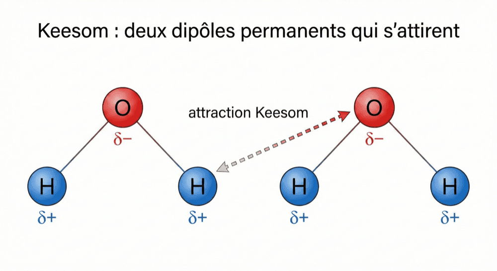

Keesom et Debye : les forces du dipôle permanent
Une force de Van der Waals, c'est toujours deux dipôles.
Change leur nature, et tu changes le nom de la force.
Tu as les deux briques. D'un côté les trois types de dipôles — permanent, instantané, induit. De l'autre la polarisabilité α, qui dit quelles molécules se laissent déformer. On les assemble maintenant : chaque combinaison de dipôles donne naissance à une force de Van der Waals, et c'est la combinaison qui donne son nom à la force.
| Dipôle 1 | Dipôle 2 | = Force |
|---|---|---|
| Permanent | ↔ Permanent | Keesom |
| Permanent | ↔ Induit | Debye |
| Instantané | ↔ Induit | → la fiche suivante |
Les deux premières lignes exigent un dipôle permanent : elles sont donc réservées aux molécules polaires. Ce sont celles-là qu'on traite ici. La troisième combinaison, la seule qui n'a besoin d'aucun dipôle permanent, a droit à sa propre fiche.
A. Keesom — dipôle permanent ↔ dipôle permanent. Deux molécules polaires s'attirent parce que leurs dipôles permanents s'alignent favorablement : le δ+ de l'une face au δ− de l'autre. Côté chiffres : 1 à 10 kJ/mol, et l'intensité dépend de la polarité μ des deux molécules (μ₁ × μ₂ : il en faut deux, et plus elles sont polaires, plus ça tient). Exemples : entre molécules d'acétone (CH₃COCH₃) — c'est pourquoi l'acétone a un point d'ébullition de 56 °C malgré une masse molaire modeste — et entre les groupes NH₂ et CONH dans les protéines.

B. Debye — dipôle permanent ↔ dipôle induit. Une molécule polaire approche une molécule apolaire et déforme son nuage électronique, créant un dipôle induit. L'attraction se fait ensuite entre le dipôle permanent et le dipôle induit qu'il a lui-même créé. Côté chiffres : ≈ 0,5 kJ/mol — la plus faible des trois. Elle dépend de la polarité μ de la molécule polaire ET de la polarisabilité α de la molécule apolaire (μ × α : c'est exactement là que sert le α de la fiche précédente). Exemples : O₂ dissous dans l'eau — l'eau (polaire) induit un dipôle sur O₂ (apolaire) → faible solubilité ; et entre un groupe NH₂ et un cycle phényle dans une protéine.
- 1 Elles varient en 1/r⁶. Donc très sensibles à la distance (r = la distance entre les deux molécules). C'est vrai pour toutes les forces de Van der Waals, la troisième comprise.
- 2 Elles sont non directionnelles. Aucune orientation imposée : elles agissent quelle que soit la façon dont les molécules se présentent l'une à l'autre. Une seule interaction du chapitre fera exception, on la verra plus loin.
✏️ Comment on les écrit ? Les forces de London, Keesom et Debye n'ont pas de notation symbolique — contrairement à la liaison covalente (trait plein : H–Cl) ou à la liaison H (pointillés : O–H ··· O). On les mentionne uniquement en toutes lettres dans une explication. Seule la liaison hydrogène a une notation écrite, parce qu'elle est directionnelle et localisée : elle part d'un point précis et vise un point précis, on peut donc la dessiner.
Il reste donc une troisième combinaison — celle qui n'exige aucun dipôle permanent, et qui fonctionne donc aussi entre molécules apolaires. C'est l'objet de la fiche suivante.